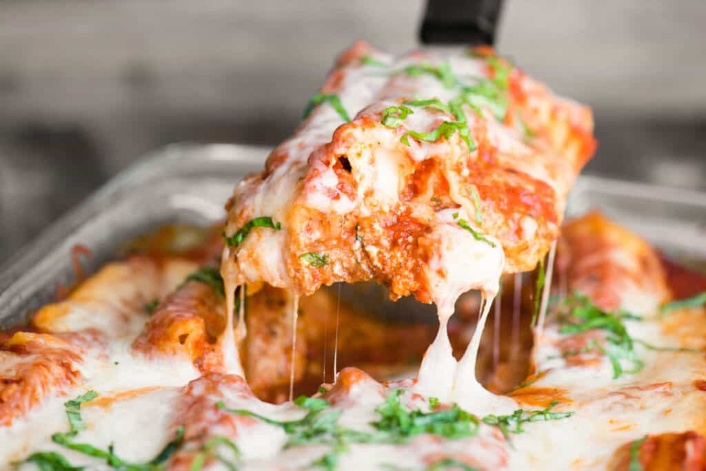

Home
Manigott Recipe

This manicotti recipe makes a comforting dinner your family will love. The kids like to help stuff the noodles too! Delicious served with a crispy salad and garlic bread.
Ingredients :
- 5.5 ounces manicotti pasta
- 1 pint part-skim ricotta cheese
- 8 ounces shredded mozzarella cheese
- 3/4 cup grated Parmesan cheese, divided
- 2 large eggs
- 1 teaspoon dried parsley
- salt and ground black pepper to taste
- 1 (16 ounce) jar spaghetti sauce
Steps:
- Cook manicotti in boiling water until al dente, about 10 to 12 minutes; drain and rinse with cold water.
- Preheat the oven to 350 degrees F (175 degrees C).
- Mix ricotta, mozzarella, 1/2 cup Parmesan cheese, eggs, parsley, salt, and pepper in a large bowl until well combined.
- Pour 1/2 cup spaghetti sauce into an 11x17-inch baking dish. Stuff each manicotti shell with 3 tablespoons cheese mixture, and arrange over sauce. Pour remaining sauce over the top of the shells and sprinkle with remaining Parmesan cheese.
- Bake in the preheated oven until bubbly, about 45 minutes